Глава I
Деревенька
Первое утро в чужом мире. Коза Марта съела куст, который пытался съесть её. Из чащи вышли тени с глазами-фонарями. Староста раздал вилы: «В Галактике мы и не с таким справлялись. Правда, там у нас были линкоры».
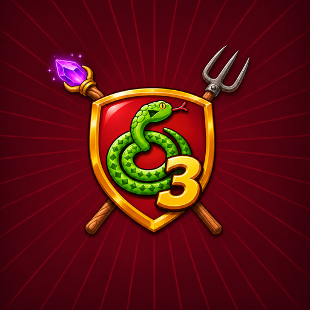
Хроноускоритель сломался. Столица Галактики провалилась в прошлое, в чужой волшебный мир. От неё осталась деревенька и сорок упрямых жителей. Защитите Гадюкино снова!
Пролог · Коллапс
Прошли века с тех пор, как Гадюкино отбилось от пришельцев и стало столицей Галактики. Над рекой поднялись башни выше облаков, у причалов стояли звездолёты, а на площади, как и тысячу лет назад, — памятник деду Ерофею с вилами.
Однажды Галактический институт Гадюкино запустил Хроноускоритель. Задача была скромная: чтобы шаурма приезжала раньше, чем её закажут.
Небо свернулось, как блин на сковороде. Башни сложились, как подзорная труба, и век за веком провалились в прошлое. От столицы Галактики осталось шесть изб, колодец, баня, коза Марта и сорок жителей в льняных рубахах. У деда Ерофея в сарае нашёлся бластер, но батарейка в нём почти села.
Вокруг — Чародол, мир меча и магии. Деревья здесь перешёптываются, в болоте горят огни, а ночью над лесом всходят две луны: серебряная и зелёная. Людей здесь не ждали. Но гадюкинцы и не таких видали.
Тысячи лет мы строили Гадюкино в одном мире. Теперь начинаем заново, в другом.
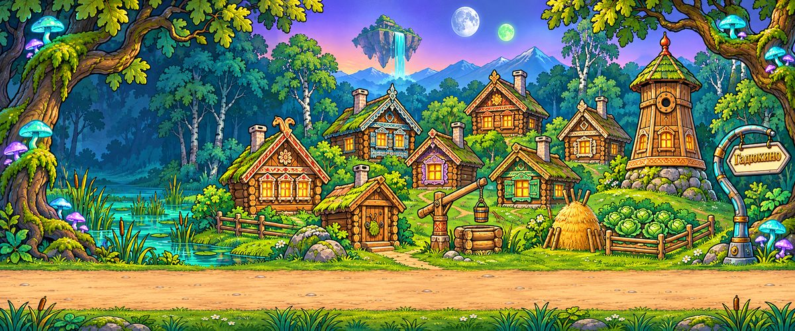
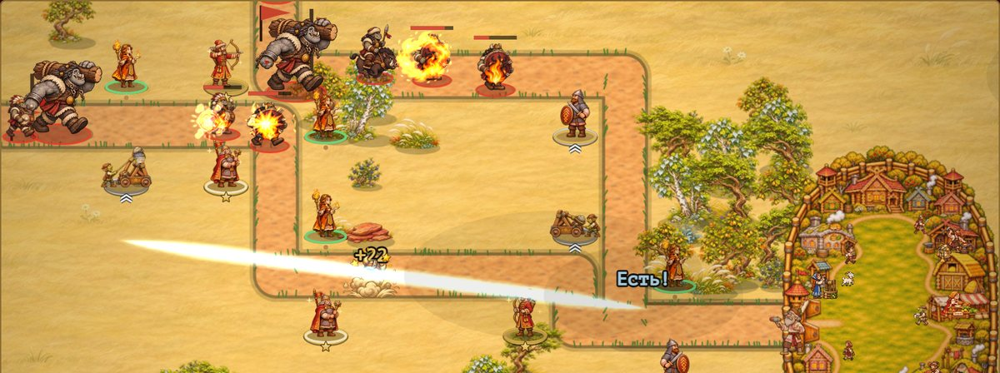
Вчерашний враг — завтрашний союзник
Каждую главу Гадюкино отбивается от новой расы. А через главу эта раса переезжает в Гадюкино — «у вас баня тёплая» — и встаёт на оборону рядом с людьми. В финале против проклятых богов выходят все, с кем Гадюкино когда-то воевало.
Первое утро в чужом мире. Коза Марта съела куст, который пытался съесть её. Из чащи вышли тени с глазами-фонарями. Староста раздал вилы: «В Галактике мы и не с таким справлялись. Правда, там у нас были линкоры».
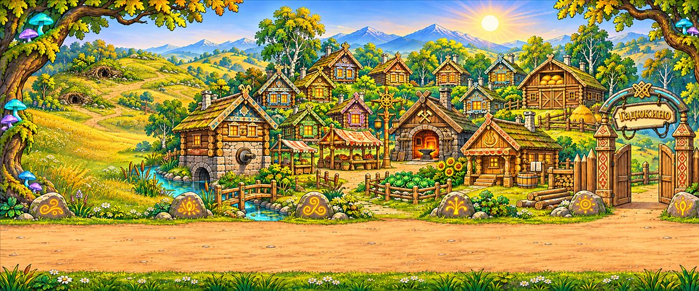
Гоблины из холмов решили, что межевые камни ставят для них, и каждую ночь их переставляют. Сегодня они пришли не за камнями, а за всем посёлком. Ведунья нашла в роще руны. Руны, кажется, работают.
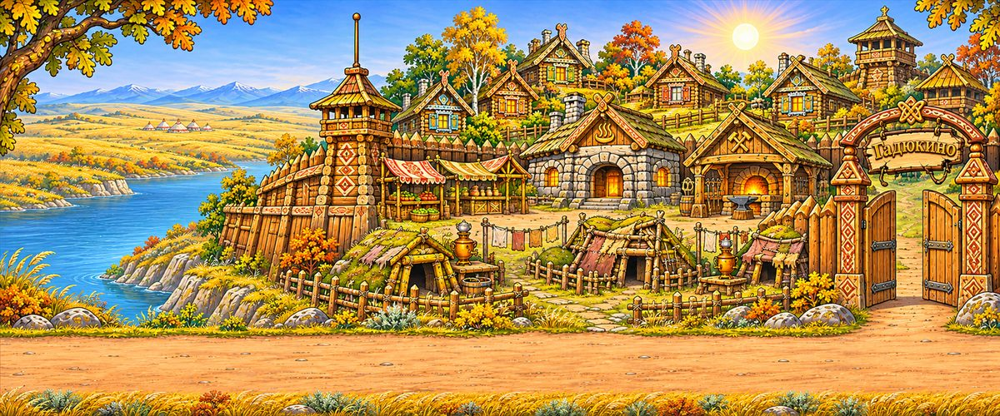
За рекой пылит Орда. Орки не умеют считать до трёх, но до тридцати тысяч воинов Хан Гронгар их как-то собрал. Гоблины несут бочки с порохом. Лучше не спрашивать, откуда порох.
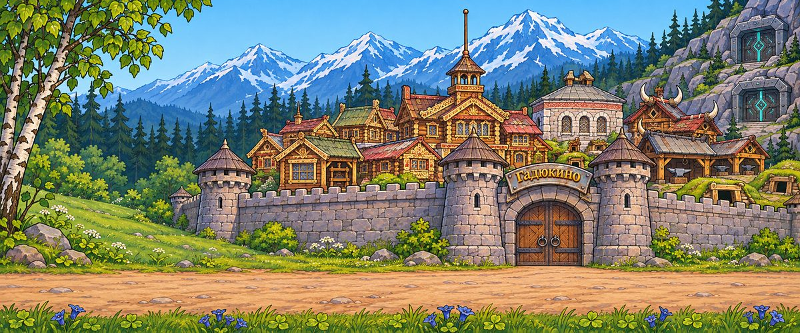
Стук города слышно даже под горами, а там тишину берегут десять тысяч лет. Гномьи кланы выкатили паровые буры и железных големов. Наши орки ответили: «Хорошо. Мы любим громко».
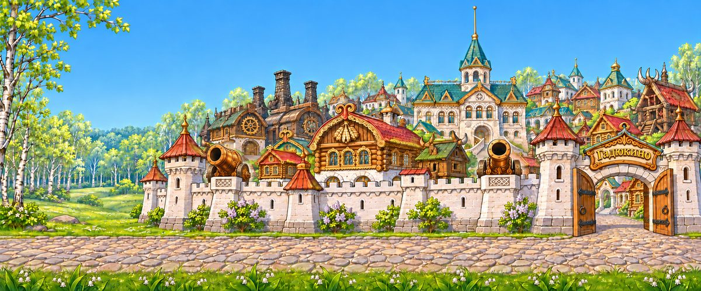
«Вы закоптили нам звёзды», — сказали эльфы. Из лесов выходят лучники, а с неба — всадники на пегасах и орлах. Впервые враг приходит по небу, и гномы задирают пушки вверх.
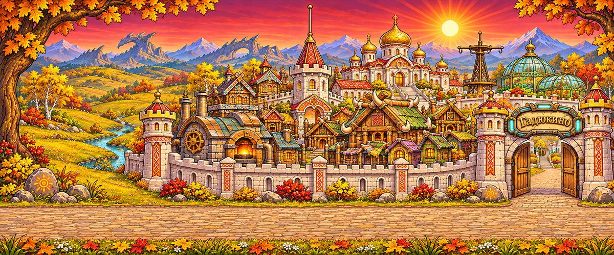
Империя пяти народов поднялась так высоко, что её увидели Первородные — драконы, дриады и людоящеры. Для них сто лет — как один вдох. Они решили, что люди задержались в гостях.
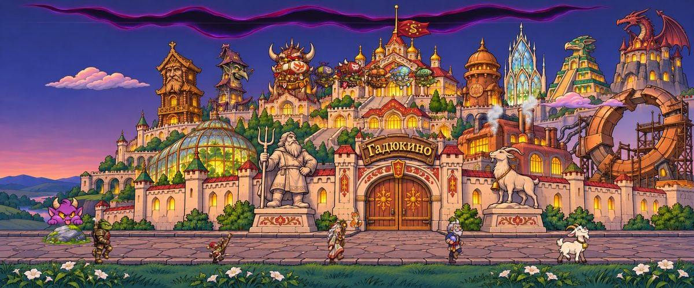
Огни Гадюкина разбудили тех, кто спал в глубине: трёх проклятых богов. Небо треснуло, как в день Коллапса. Теперь против Гадюкина не народ, а сама тьма. Против неё выходят все.
Главная новинка части
Маг — новый защитник. В каждой главе у него новые чары, и каждые следующие зрелищнее прежних.
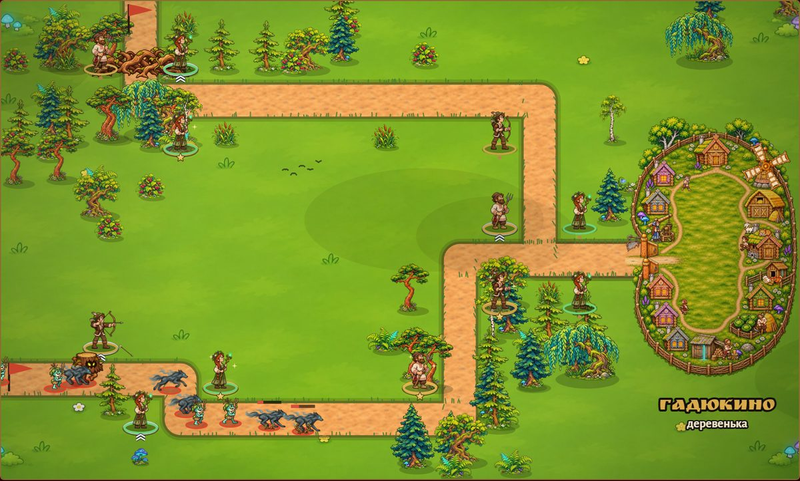
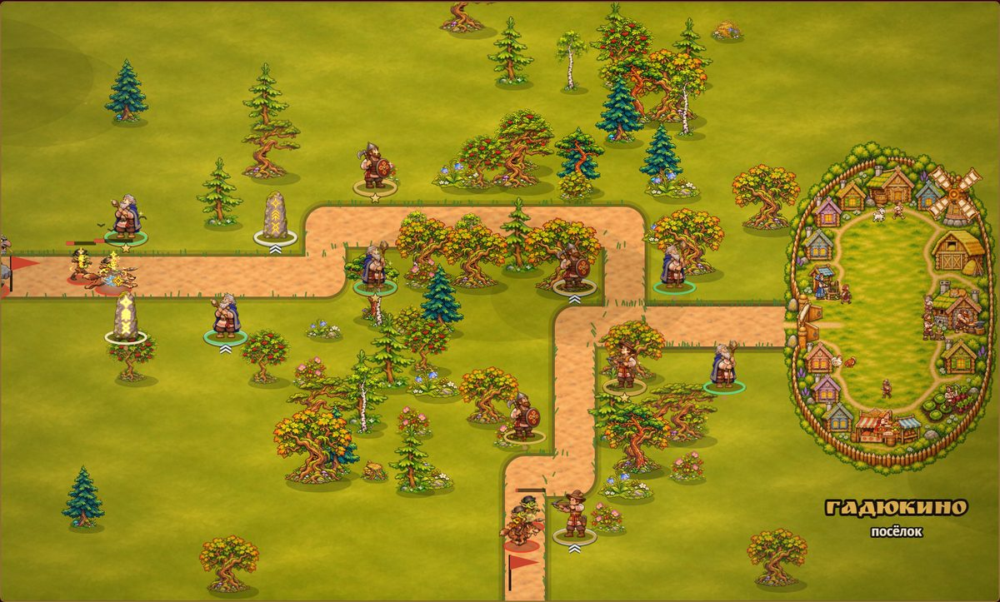
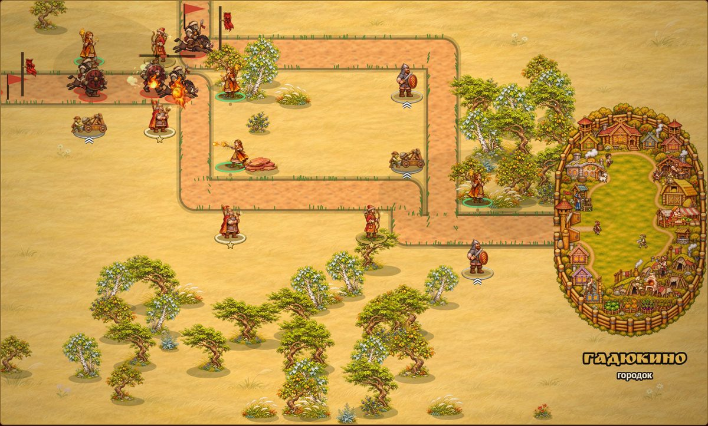
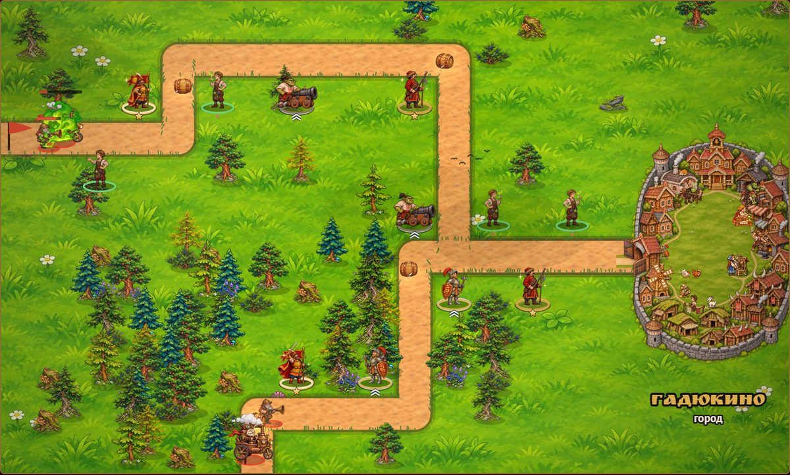
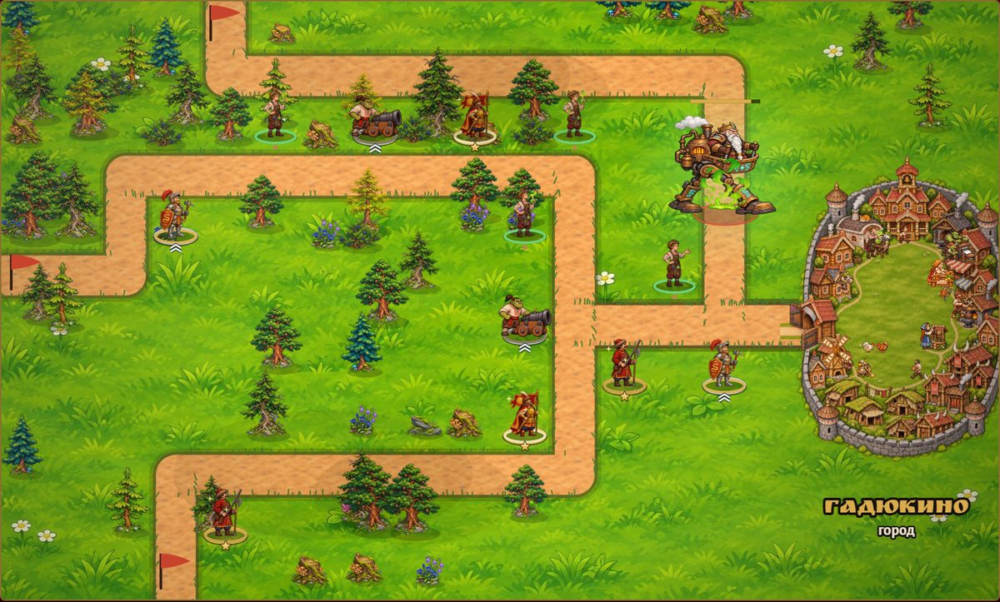
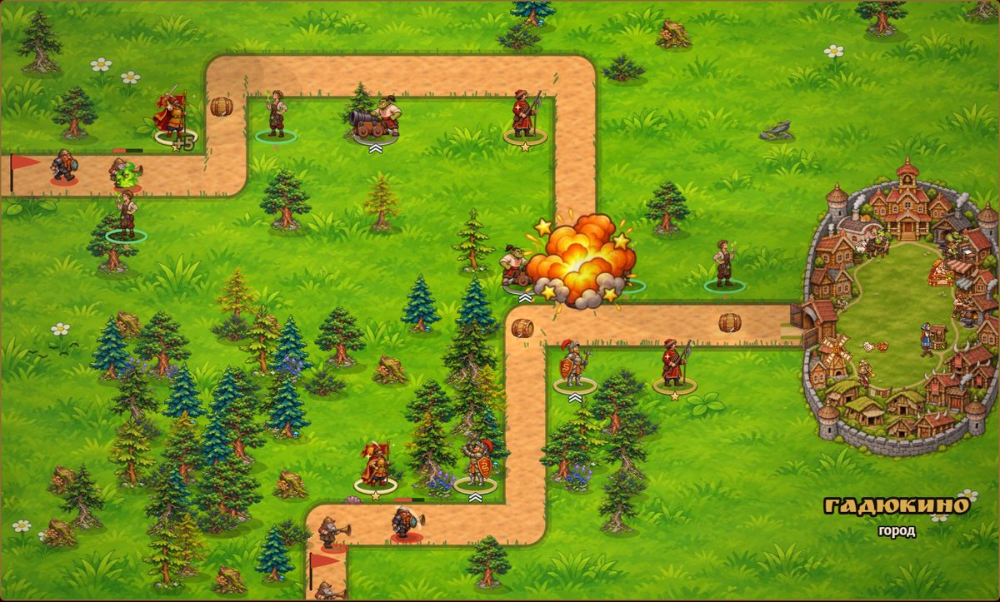
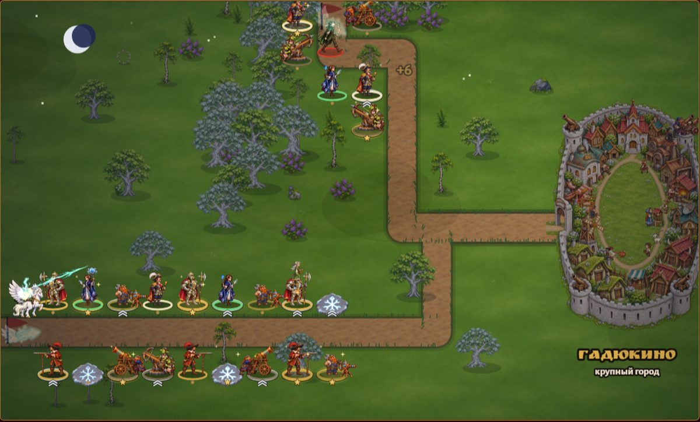
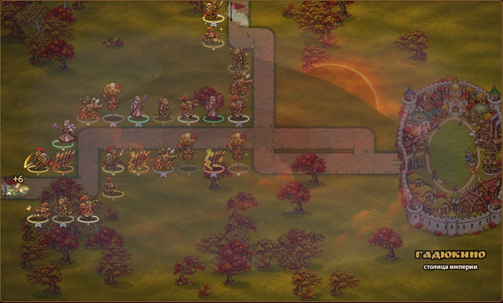
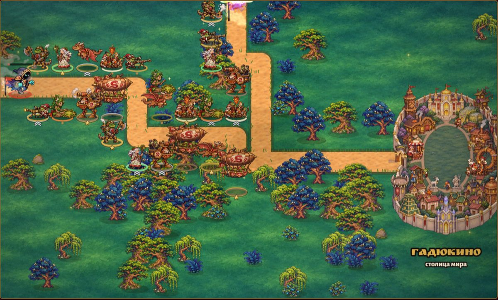
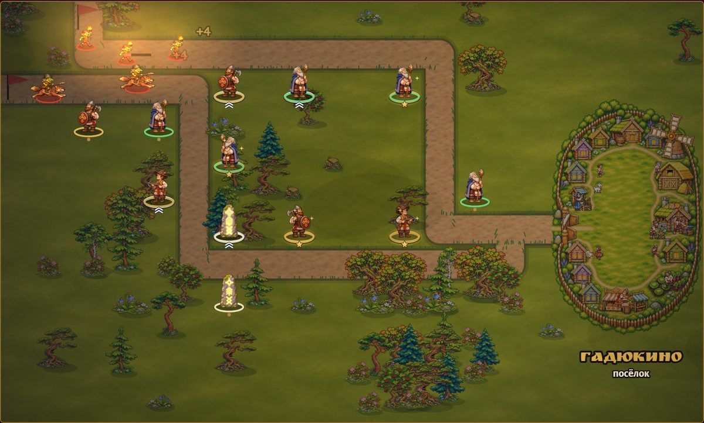
Гоблин-подрывник, орк-берсерк, гномий инженер, эльф-следопыт и дракон. С IV главы защищают все народы Гадюкина.
С пятой главы враг летит по небу: против пегасов — баллисты, аэростаты и броненосные дирижабли.
Мини-вожак на 5-м уровне, вожак на 9-м, у поздних — по нескольку обличий: Царь-Трясина, Хрябз на паланкине, Хан Гронгар Безухий, Ауррактус, Безликий.
«Вестник Гадюкина», пивные бочки, степной пожар, заезжие купцы со своими шутками и коза Марта, которая бодает чудище.
От шести изб до столицы мира. У каждой главы живая обложка, по улицам гуляют жители всех рас.
Три звезды за идеальную оборону, Чародольский справочник, бестиарий, своя музыка и обучение.
Игра готова: все 7 глав и 63 уровня. Она ждёт своей очереди на модерацию в RuStore и выйдет в ближайшее время. А пока можно сыграть в первую часть.
Нет. У «Чародола» своя история и своё обучение. Но знакомые лица — староста Ерофей, коза Марта, вилы деда — порадуют тех, кто играл раньше.
Бесплатная, встроенных покупок нет. Работает без интернета; интернет нужен только для показа рекламы между уровнями.
На телефонах и планшетах с Android 7.0 и новее, играть удобно горизонтально.
Где гадюкинец стоял, там враг не проходил!